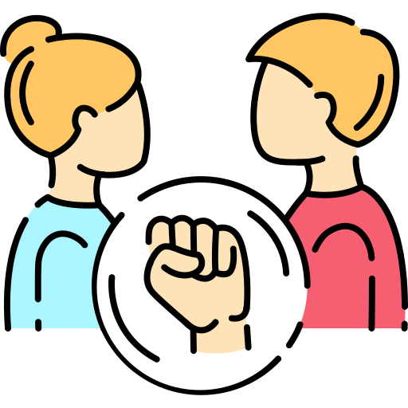

La violencia intrafamiliar es un problema que afecta a muchas familias sangileñas. En estos casos los pensamientos de "no poder sentirse seguro, no saber a quien acudir, no saber si denunciar o no" forman parte de los problemas de convivencia ciudadana del municipio. A pesar de esto, los ciudadanos de San Gil no cuentan con una herramienta tecnologica que les permita registrar y hacer seguimiento sobre los casos de violencia intrafamiliar que se dan en sus sectores. Al no tener un debido seguimiento de este problema, no se pueden desarrollar estrategias efectivas que ayuden a tratar los sectores mas vulnerables a este tipo de violencia.
Construir un prototipo de software que permite hacer registro y seguimiento de las violencia intrafamiliar en el municipio de San Gil, al mismo tiempo que genere un mapa de calor que permitan detectar los indices de volencia intrafamiliar en los diferentes sectores.
Sistema de registro y seguimiendo de violencia intrafamiliar (SVI), servirá a los Sangileños, respetando el derecho a la privacidad, como herramienta tecnológica para que puedan registrar y seguir la violencia intrafamiliar. Y que sirva tanto a las autoridades municipales como a los ciudadanos como herramienta para diseñar y adelantar estrategias y acciones que permitan disminuir los indices de violencias en el municipio.